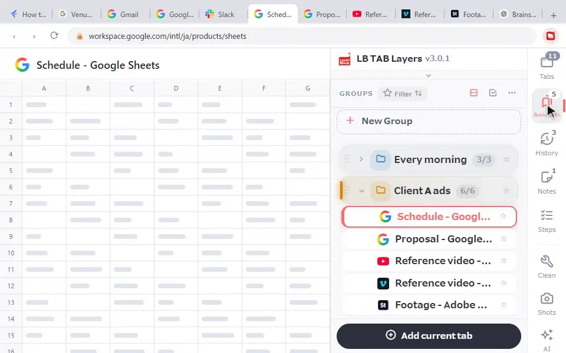

Name folders and files so that you will understand them a year from now, and so that someone else can understand them today. In our video studio, each project folder holds process folders side by side (tool, render, preview, delivery, and files from the client), with date folders inside each one. File names go from the biggest unit to the smallest. The same structure works for your browser tabs and bookmarks.
You name folders and files dozens of times a day, yet almost nobody is ever taught how. This article shares the folder structure and naming rules we actually use at Liquid Block, a video and motion graphics studio in Kobe, Japan. Nothing here is specific to video. It works for any project-based work.
The rule: don’t name things for who you are today
Folders and file names get messy because we give them names that make sense to ourselves, right now. A name that feels obvious today will mean nothing to you a year from now. And the you of a year from now is, for all practical purposes, someone else.
So we check every name against just two questions:
- Will I understand this a year from now?
- Could someone else open this and understand it?
If a name passes both, you won’t waste time searching for it, and you won’t have to explain it to anyone.
How to organize project folders: processes across, dates down
Every project gets the same structure:
Project name/
├─ Tool folder (After Effects, etc.)/
├─ Render/
│ └─ 20261115/
├─ Preview/
│ └─ 20261115/
├─ Delivery/
│ └─ 20261115/
└─ Downloads (From client)/
└─ 20261115/
Side by side: the processes
Open a project folder and you see tool, render, preview, delivery and downloads, all at the same level. You know which stage a file belongs to before you even open the folder.
Stacked inside: the dates
Inside each process folder are date folders, written as 20261115 (year, month, day, no separators). Sorted by name, they line up from oldest to newest on their own. The folders themselves tell the story of what happened when.
“Downloads” means “From client”
The downloads folder is where everything the client sends you lands. Each delivery goes into a folder named with the date you received it, inside that project. Files from every project never pile up together in your computer’s Downloads folder again.
File naming conventions: from the biggest unit to the smallest
File names follow a fixed order too:
- Rendered files: title → scene → version
- Footage and assets: cut number → effect → role (sometimes with a version at the end)
Both go from the biggest unit to the smallest. Sort by name, and everything from the same title or the same cut groups itself together. Because the version comes last, different versions of the same thing sit right next to each other. The order of the words in the name decides the order of the files in the folder.
A common mistake is to put your feelings at the front: “final”, “fixed”, “new”. Those words mean something only on the day you typed them. Put the stable, big words first and the small, changing ones last.
Shared references: use shortcuts, not copies
Reference material and presets that many projects use should not be copied into each project folder. Instead, put a shortcut (a link) to them in the project folder.
This matters most when the files live on a server and someone keeps them up to date. Copies leave an old version behind in every project, and soon nobody knows which one is current. A shortcut always leads to the latest version.
On Windows, right-click the reference folder, choose Create shortcut (in Windows 11 it is under Show more options), and move the shortcut into the project folder. On a Mac, an alias does the same job.
Use the same structure for browser tabs and bookmarks
Your computer’s folders may be tidy while your browser still only makes sense to “you, right now”: reference videos, stock footage sites, preview links and the schedule, all in one long row of tabs.
Give the browser the same structure as your folders:
| On your computer | In your browser |
|---|---|
| Project folder | A group for the project |
| Process folders (preview, delivery, from client…) | Subgroups |
| Individual files | Saved pages (bookmarks) |
| Shortcut to shared references | A bookmark (a link to the page) |
If the group has the same name as the folder on your computer, there is only one place to look a year from now. And a bookmark, like a shortcut, is a link rather than a copy: a shared schedule or an internal manual that someone keeps updating is always current when you open it. For ideas on structuring bookmarks in general, see how to organize bookmarks in Chrome.
Building the same structure with LB TAB Layers
We built LB TAB Layers, a Chrome extension, for our own work first. The “Layers” in the name comes from exactly this idea of levels.
- Groups and subgroups: sort tabs and bookmarks into “project > process”. They are saved as Chrome bookmarks, so closing them never loses them, and ▶ opens a whole group again. The free version supports two levels. See groups and subgroups.
- Save your folder structure as a preset: build your usual structure once, right-click it and choose Save this structure as a preset. On the next project, the same structure appears in one step.
- Record the folder on your computer: you can add the path of a folder on your PC or server to a project group. Click Copy folder path and paste it into File Explorer’s address bar to open it.
- Write down why you saved a page: New note for this page keeps a note next to the page. If you record why you kept it, the you of next year will remember. See notes.

Summary
- Test every name: will I understand it in a year, and could someone else?
- Folders: processes side by side, dates stacked inside, written like 20261115
- File names: from the biggest unit to the smallest, version at the end
- Shared references: shortcuts, not copies
- Give your browser tabs and bookmarks the same structure
Start small: on your next project, recreate your usual folder structure in the browser once and see how it feels.
Frequently asked questions
Q. What is a good rule for naming folders and files?
Ask two questions: will I understand this name a year from now, and could someone else understand it today? A name that only makes sense to you right now will not make sense later.
Q. How should I write dates in folder names?
We write them as 20261115 (year, month, day, no separators). Sorted by name, the folders line up from oldest to newest automatically.
Q. What order should the parts of a file name go in?
From the biggest unit to the smallest, with the version at the end. For rendered files we use title, scene, version. For footage, cut number, effect, role.
Q. Should I copy shared reference files into each project folder?
No. Put a shortcut (or alias) to them in the project folder instead. Copies leave an old version in every project, and soon nobody knows which one is current.
See it in action


Your folder structure, in your browser too.
Project groups and process subgroups, saved as Chrome bookmarks. Open with ▶, close with ■. No account needed.
Add to Chrome — it's free →